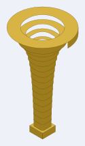

The bell and the mouthpiece
Neither end is touched by the way a bore turns, so only the tube belongs to an instrument. Both ends are stacks of laminated 3mm rings, both close onto the same 10mm square in a 16mm face, and every bore in this repository is on that channel — so one bell and one mouthpiece serve all of them.
Both live in ../parts/ rather than inside any one instrument's folder, because neither belongs to a single bore: what cuts them is not what fits them.
The bell
17 rings of 9mm, 153mm tall, a 10mm square throat opening to a ø86mm round rim — ø80 of air. The section morphs square to round on the way up while holding area, so the bore never steps in cross-section even though the shape of it changes completely.

That is the one on the instrument. The small square block is the throat — 10mm of air in a 16mm face, which is a bore block exactly — and the flat disc is the rim. Everything between them is the section changing from square to round while holding area, three plies at a time.
Turn it → The viewer is a page of its own: drag to rotate, and the slider stacks the rings one at a time, which is the useful part.

| rings | 17, each 3 laminations of 3mm |
| height | 153mm, built on a 152mm profile |
| throat | 10mm square |
| rim | ø86.0mm outside, ø80 of air |
| profile | Bessel horn, gamma 0.7 |
| sheet | 187 × 192mm |
| pieces | 51 — the sheet goes through the machine three times |
The bell is cut more than once. The sheet draws every ring once, and the x3 in its filename is how many passes it takes. Cut it once and you get a 51mm stub instead of a 153mm bell.
Rings stack; they do not telescope. Each seats on the one below over 3.0mm per side. They are engraved in hex with 0 at the bore, and the generator writes the numbering itself as the last step, with an orientation tick beside each number — a numbering failure deletes the sheet rather than leaving an unnumbered one to be cut.
cd parts/bell && python3 bell-round.py 17 --bore=10 --length=152 --mouth=80 \
--out=cut-files/bell-round10-153mm-17rings-x3-rim86-cut-files.svgA bare bell-round.py writes four ring budgets, not one; the shipped sheet is among them and comes back identical, the other three are scratch. Pass a budget to write one.
The adapter
A swept-curve bore leaves its cheek through a 7 × 14mm port, not a 10mm square, so it cannot meet this bell directly. bell-adapter.py draws the piece that carries one into the other: 7 rings of one ply, 21mm, holding area across the change on a smoothstep so both ends are tangent. The last ring is a collar — 10mm square in a 16mm square face, which is the bore's own end face, so the bell stacks on it unchanged.
cd parts/bell && python3 bell-adapter.py \
--out=cut-files/bell-adapter-port7x14-to-bore10-7rings-x1-cut-files.svgThe mouthpiece
30 rings of 3mm, 90mm tall. A 16mm square plate at the instrument and a ø23mm rim at the lip — ø17 where the lip actually sits — narrowing to a ø3.66mm throat before the backbore. Full size on a quarter-size instrument, which is the point of it.

The square block is what meets the bore; the cup is what meets the lip, and the waist between them is the throat. The staircase in that photograph is left as it is. Every ring is a 3mm step, and the rim is the one part of the instrument a player feels directly — this one meets a lip unsanded and unfilled.
Turn it → Again a page of its own, and again the slider stacks it a ring at a time.
| rings | 30, each 1 lamination of 3mm |
| height | 90mm |
| layout | 26 backbore rings, 0 entrance rings, 4 bowl rings |
| at the instrument | 10mm square aperture in a 16mm square plate |
| throat | ø3.66mm |
| rim | ø23mm outside, ø17 at the lip |
| wall | 3 to 4.96mm |
| sheet | 111 × 101mm |
| pieces | 30 — one pass |
Station one is a sharp 10mm square aperture in a sharp 16mm square plate, matching the bore corner for corner. The corners round away going up, and the section is a true circle from the 9.026mm station on, so the throat and the whole cup are round.
cd parts/mouthpiece && python3 mouthpiece-round.py \
cut-files/mouthpiece-bore10-trumpet-parts-cut-files.svgThe staircase is not sanded or filled. Thirty 3mm rings make a 90mm cone out of thirty steps, and the lip is the one part of this instrument that can feel every one of them — it is played that way, off the sheet and unfinished.
The mouthpiece on the instrument that has been built is 24 rings, 72mm — not the 30 this sheet cuts. It is the instrument that is short, not the drawing.
Every sheet is claimed
Both directories carry a .repro manifest naming the exact command that draws each shipped SVG, checked by repro-svg.py. It runs every command into a temp path and compares the result byte for byte against the sheet on disk, so a sheet the current code would not draw is caught rather than shipped. A sheet with no command behind it is reported UNCLAIMED, which is why the manifest has to grow whenever a drawing does.
The bores these fit
the three-turn trumpet — the one they are actually glued to — and the candidates: the switchback trumpet · the greek spiral, plus every other bore in ../parts/bore/, all of them on the same 10mm channel.
More, and licence
The trumpet writeup — the idea, the notation, the gate, and the whole library.
The rest of the build files — every instrument, each with its own writeup.
Released under CC0 1.0.